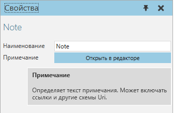
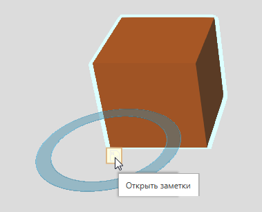
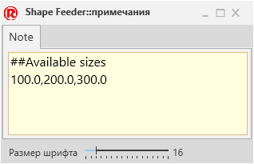
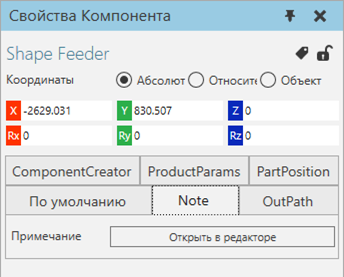

Примечание |
|
Примечание позволяет предоставить документацию (текст в произвольной форме) для компонента.  В трехмерном мире вы можете щелкнуть значок примечания выбранного компонента, чтобы просмотреть и отредактировать его примечания.  Редактор отображает каждое примечание на отдельной вкладке и в текстовой области. Существует глобальный параметр размера шрифта, который влияет на размер текста во всех примечаниях.  По умолчанию свойство Примечание является видимым на панели свойств для выбранного компонента.  Свойства
|